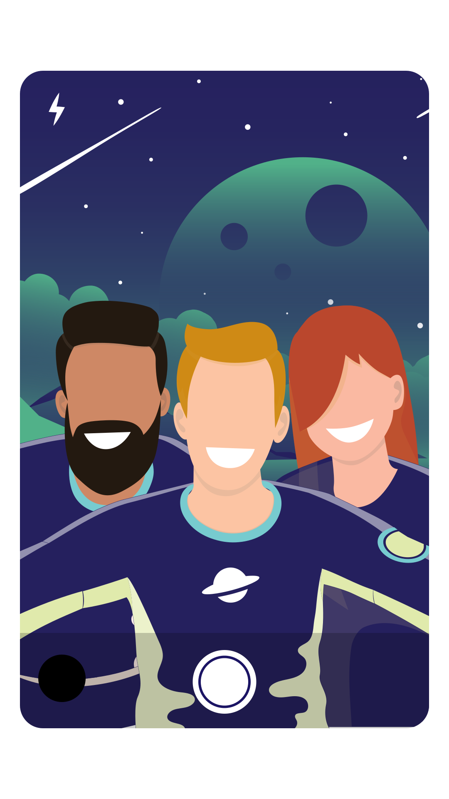
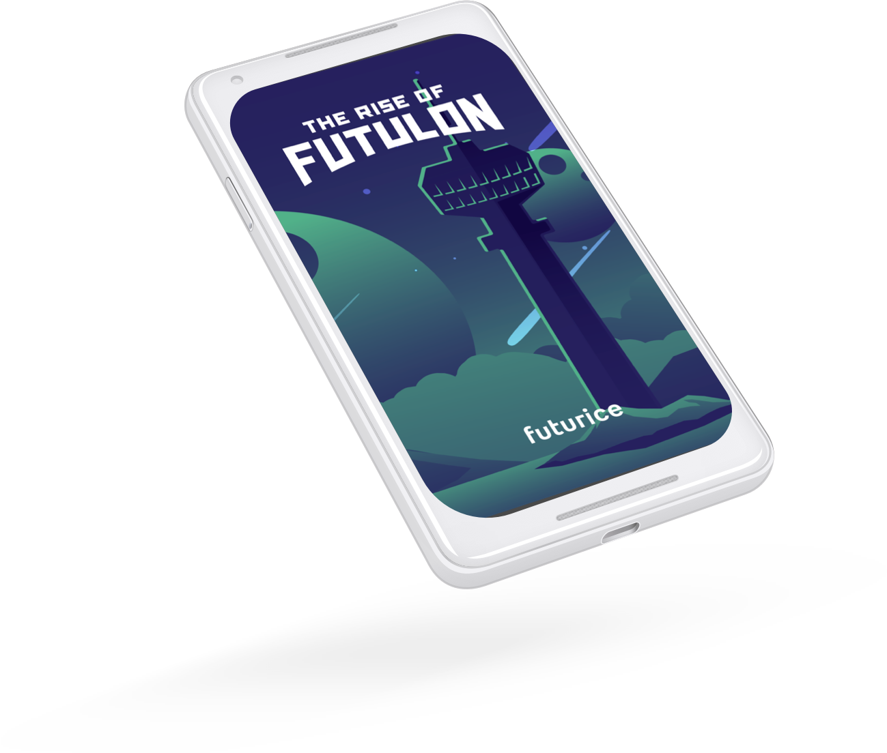

Each year all Futurice employees converge to a single location for
FutuCamp, a two-day summer event involving learning, sharing and
fun. This year the event instantiates itself as Futulon, an
imaginary planet embedded within Tampere, Finland. When it's time
for FutuCamp 2020, where will you be?


Join Futurice
Do you want to leave your mark on the future? Check out our open
positions or submit an open application.
We are a digital engineering and innovation consultancy that helps
organisations transform their business by bringing together complex
software engineering and beautiful human-centered design. We believe
technology amplifies human potential. Since 2000, we have helped our
clients in industries ranging from energy, retail and construction
to media, finance and automotive develop their business practices,
ways of working and culture to meet the challenges of digital
disruption. There are over 500 of us in Berlin, Helsinki, London,
Munich, Stuttgart, Oslo, Stockholm, and Tampere.